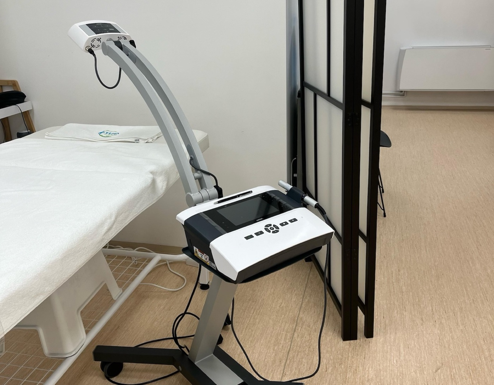
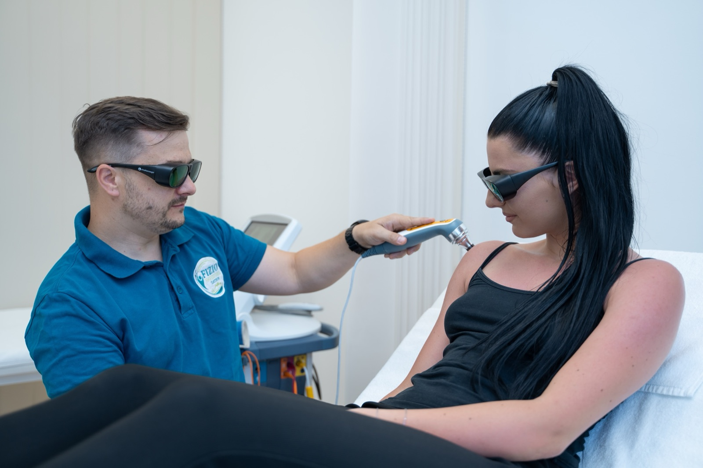

Laser terapija — bezbolno rešenje za uporan bol
Tenis lakat koji vam ne da mira, pekuća peta čim ujutru stanete na pod, ukočen prst koji „pucketa" — sitne, ali tvrdoglave tegobe koje znaju da traju mesecima. Laser terapija (laser niskog intenziteta, LLLT) ulazi tačno na ono mesto koje boli i podstiče zarastanje na nivou ćelije (biostimulacija). Bez igle, bez bola, bez osećaja toplote — sondu spustimo na kožu, a vi posle tretmana mirno nastavite svoj dan.

Kako izgleda tretman
Naočare za zaštitu
Vi i terapeut stavljate posebne zaštitne naočare (mi ih obezbeđujemo). Laser ne sme direktno u oči — to je jedino važno pravilo i sve je rešeno za dva sekunda.
Sonda na koži
Sonda lasera se nežno spušta na kožu (tačka po tačka) ili se polako pomera preko područja (skener). Bez gela, bez igala, bez rezova — ništa ne pecka i ništa ne greje.
Ne osećate ništa
Najčešća reakcija je: „Je l' već radi?" Nema toplote, nema trnaca, nema osećaja struje. Po završetku ustanete i odmah nastavljate dan — vožnju, posao, trening.
Najbolje indikacije za laser
Laser je najjači kod precizno lokalizovanih, „malih ali upornih" bolova — tetiva, malih zglobova i površnih tkiva — kao i kod stanja gde želimo da podstaknemo zarastanje.
Bol i zapaljenje tetiva
- Tenis i golf lakat (lateralni i medijalni epikondilitis)
- Bol u ahilovoj tetivi (ahilov tendinitis)
- Trnac u peti i bol u stopalu (plantarni fasciitis)
- Karpalni tunel u ranoj fazi (trnci u prstima šake)
- „Skakačko" koleno (patelarna tendinopatija)
- „Fiziološki" prsnik prsta — prst koji se zaglavi (trigger finger)
- Bol u vilici i klikanje (TMJ disfunkcija)
- Bol u malim zglobovima — prsti šake i nožnih prstiju (rana faza osteoartroze)
- Bolne tačke u mišićima (trigger tačke)
Zarastanje i regeneracija
- Rane koje sporo zarastaju (čirevi, postoperativne rane) — uz uput lekara
- Omekšavanje i izbledjivanje ožiljaka posle operacije
- Herpes na usnama (herpes simplex) — odabrani protokoli, najbolje u ranoj fazi
- Akutna uganuća zglobova i manja nagnječenja (kontuzije)
- Zaostali bol nakon zaraslog preloma (post‑fraktura)
- Manje sportske povrede — kada želite brz povratak treningu
- Hronični, tačkasti bol koji se javlja iznova na istom mestu
- Neinvazivna alternativa za one koji ne žele lekove ili injekcije

Koliko traje i kako se planira
Polazne vrednosti — dozu, talasnu dužinu i režim biramo prema dijagnozi, fazi tegobe i osetu kože.
- Trajanje sesije
- 5–15 min (tačka), 10–20 min (skener)
- Režim
- tačka po tačka ili skenirajući
- Osećaj
- nikakav — bez toplote i bola
- Frekvencija
- 2–4× nedeljno (akutno), 1–2× (hronično)
- Tipičan kurs
- 6–10 tretmana, sa proverom na polovini
- Zaštitne naočare
- za vas i terapeuta (obezbeđujemo)
Šta da očekujete
Prvo kratko popričamo o tegobi — gde tačno boli, koliko dugo, šta je pogoršava i šta je ublažava. Stavljate zaštitne naočare (i terapeut takođe), oslobađa se mesto tretmana, i sonda lasera dolazi na kožu. Tokom 5 do 20 minuta vi ne radite ništa — i, što je najvažnije, ne osećate ništa: nema toplote, nema trnaca, nema osećaja struje. Posle sesije ustanete i nastavljate dan kao i pre dolaska: ne treba pauza, ne treba „mirovanje". Mnogi prijave olakšanje već posle 2–3 sesije, posebno kod precizno lokalizovanih tegoba kao što su trnac u peti, tenis lakat ili bol u ahilovoj tetivi.
Kada laser nije za vas
Molimo vas da nam unapred kažete ako: ste trudni (ne lasiramo preko trbuha i lumbalnog dela), imate aktivni malignitet u predelu tretmana, imate epilepsiju koja se aktivira svetlom (fotosenzitivnu), imate aktivnu infekciju kože ili otvorenu ranu na mestu tretmana, ste skoro dobili kortikosteroidnu injekciju u to područje, imate izrazito osetljivu kožu na svetlost ili uzimate lekove koji povećavaju osetljivost na svetlo (npr. neke antibiotike, retinoide). Nikada ne usmeravamo laser direktno u oči (zato i postoje naočare), preko štitne žlezde i preko polnih žlezda. Pre prve sesije ovo sve ukratko proverimo zajedno — bezbednost je uvek na prvom mestu.